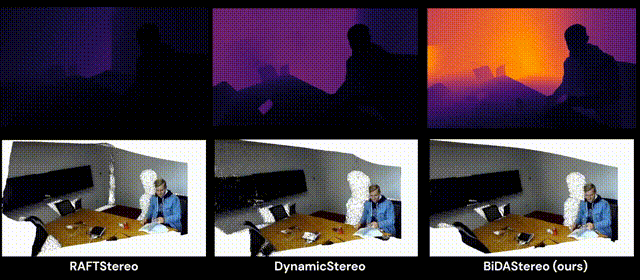

Ye MaoPhD Student (President Scholar)Dept. of Electrical and Electronic Engineering Imperial College London London, UK Email: ye.mao21@imperial.ac.uk Github: Link Google Scholar: Link |

|
Biography
I am currently a first-year PhD student specializing in Computer Vision and Machine Learning at MatchLab, Imperial College London. My research is supervised by supported by Prof Krystian Mikolajczyk and funded by the Imperial President's Scholarship. Research Interest: 3D point cloud analysis, multimodal learning, and open-vocabularly learning.
Prior to my PhD journey, I completed an MPhil in Medical Sciences at the University of Cambridge and an MSc in Applied Machine Learning at Imperial College London. My undergraduate studies were in Computer Science at King's College London.Education
- PhD (Probationary) in Computer Vision and Machine Learning, Imperial College London, 2023-now
-
MPhil in Medical Sciences, University of Cambridge, 2022-2023
- Thesis: Brain MRI Super-Resolution using Conditional Diffusion Model (Pass with Minor Revision)
-
MSc in Applied Machine Learning - First Class Honours (Top 1 Grade: 81%), Imperial College London, 2021-2022
- Thesis: Data-Driven Multiplexing using Real-Time Digital PCR (Top 1 Grade: 87%)
-
BSc in Computer Science - First Class Honours (Top 1 Grade: 82%), King's College London, 2018-2021
- Thesis: String Sanitisation Algorithm Development (Top 1 Grade: 81%)
Publications
 |
OpenDlign: Enhancing Open-World 3D Learning with Depth-Aligned Images Ye Mao, Junpeng Jing, and Krystian Mikolajczyk Arxiv 2024. [Project Page] [Arxiv] [Code] |
|  | Match-Stereo-Videos: Bidirectional Alignment for Consistent Dynamic Stereo Matching Junpeng Jing, Ye Mao, and Krystian Mikolajczyk Arxiv 2024. [Project Page] [Arxiv] [Code] |
 |
DisC-Diff: Disentangled Conditional Diffusion Model for Multi-Contrast MRI Super-Resolution Ye Mao, Lan Jiang, Xi Chen, and Chao Li MICCAI 2023. [Project Page] [MICCAI] [Code] |
 |
CoLa-Diff: Conditional Latent Diffusion Model for Multi-Modal MRI Synthesis Lan Jiang, Ye Mao, Xi Chen, and Chao Li MICCAI 2023. [Project Page] [MICCAI] [Code] |
Deep Domain Adaptation Enhances Amplification Curve Analysis for Single-Channel Multiplexing in Real-Time PCR Ye Mao, Ke Xu, Luca Miglietta, Louis Kreitmann, Nicolas Moser, Pantelis Georgiou, Alison Holmes, and Jesus Rodriguez-Manzano IEEE Journal of Biomedical and Health Informatics. [IEEE JBHI] |
Prizes & Scholarships
- Imperial President’s PhD Scholarship – Among top 50 selected college-wide.
- AML Prize 2022 – Prize for the Highest Overall Grade in MSc. Applied Machine Learning.
- Hertha Ayrton Centenary Prize 2022 – Prize for the Highest Final Year Project Grade in the Imperial EEE department.
- Robotics Prize – Prize for the Highest Overall Grade in BSc. Computer Science and Robotics.
- Peplow Prize – Prize for the Highest Final Year Project Grade in the King’s Informatics department.
Teaching
- Deep Learning (ELEC60009), GTA, Imperial, 2024
- Foundation of Computing, UTA, KCL, 2021
- Robotics Group Project, UTA, KCL, 2021
Research
- Research Assistant at Centre for Antimicrobial Optimisation Lab, Imperial, 2024
- Research Assistant at Cambridge Brain Tumour Imaging Lab, Cambridge, 2023